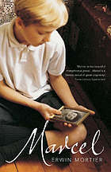

The Fall by Albert Camus
Camus was a master with the pen in his hand. A master of speaking directly into the inner human psyche and of exploring existentialism and the metaphysical self. The Fall is an example of the master at the top of his game. His old friend, Satre would refer to it as the most “beautiful” of his novels. It’s hard to disagree.

Charlie Brown and Snoopy by Charles M. Schultz
Plenty of wisdom and philosophy from Charlie Brown, Snoopy and friends in this volume; they all have views on many and varied subjects. As usual Charles Schulz presents us with 120 pages of cartoons that amuse and inform; it is simply jolly good fun.

The Plague by Albert Camus
In The Plague absurdity is a source of value, values and even action. The group of men gathered around the narrative represent, it feels, all human response to calamity. Each takes his turn to tell it, although it is the doctor, Rieux – the hidden narrator – who battles the pestilence with his work, medicine, just as Camus tried to battle first injustice, later fascism, with his labour in words.

Meetings with Remarkable Men by George Gurdijeff
This book is special of all the books he has written because you can feel the author's passion for this book. In all his other books, you must dig deep to find the beauty. However, this book is full of beauty. Gurdjieff describes all the characters in the book that he met during his own travels. All people in the tales convey some deep meanings. The best part of this book (unlike rest of his books) is that Gurdjieff is not cryptic in telling the tales.

The Outsider by Albert Camus
The book is a classic early modern work of anomie, alienation, and a general indifference to life. The book is simply written and a rather quick read, but the depth Camus manages to convey through this simplicity is astounding.

The End of the World News by Anthony Burgess
Presented without chapter breaks, the plot weaves together three storylines. One follows Leon Trotsky on a journey to New York City shortly before the Russian Revolution of 1917. This story is written as the libretto of an Off-Broadway musical. A second tale covers the life and career of Sigmund Freud and includes portrayals of Havelock Ellis and Krafft-Ebing. The third part is set in the future, shortly before the impact of a rogue, extrasolar planet with the Earth. Because of the latter story line, it is considered a work of fantastic fiction.

Riders in the Chariot by Patrick White
Patrick White's brilliant 1961 novel, set in an Australian suburb, intertwines four deeply different lives. An Aborigine artist, a Holocaust survivor, a beatific washerwoman, and a childlike heiress are each blessed—and stricken—with visionary experiences that may or may not allow them to transcend the machinations of their fellow men. Tender and lacerating, pure and profane, subtle and sweeping, Riders in the Chariot is one of the Nobel Prize winner's boldest books

The Adventures of Augie March by Saul Bellow
With this teeming book Bellow returned a Dickensian richness to the American novel. As he makes his way to a full brimming consciousness of himself, the titular character Augie careens himself through numberless occupations, and countless mentors and exemplars, all the while enchanting us with the slapdash American music of his voice.

A Confederacy of Dunces by John Kennedy Toole
The many subplots that weave through A Confederacy of Dunces are as complicated as anything you'll find in a Dickens novel, and just as beautifully tied together in the end. But it is Ignatius--selfish, domineering, and deluded, tragic and comic and larger than life--who carries the story. He is a modern-day Quixote beset by giants of the modern age. His fragility cracks the shell of comic bluster, revealing a deep streak of melancholy beneath the antic humor. John Kennedy Toole committed suicide in 1969 and never saw the publication of his novel. Ignatius Reilly is what he left behind, a fitting memorial to a talented and tormented life.

Down and Out in Paris and London by George Orwell
This unusual fictional memoir - in good part autobiographical - narrates without self-pity and often with humor the adventures of a penniless British writer among the down-and-outs of two great cities. The Parisian episode is fascinating for its expose of the kitchens of posh French restaurants, where the narrator works at the bottom of the culinary echelon as dishwasher, or plongeur. In London, while waiting for a job, he experiences the world of tramps, street people, and free lodging houses. In the tales of both cities we learn some sobering Orwellian truths about poverty and of society.

1984 by George Orwell
Narrated with infinite precision, 1984 is one of the most famous dystopian satires in the English language. Its vocabulary -- "doublethink," "Big Brother," "down the Memory Hole," "Thought Police," "unperson" -- has become part of popular culture. Winston Smith's quest for freedom under the gaze of all-seeing, all-knowing Big Brother still resonates strongly today, when privacy is hard to come by and governments adopt intrusive policies, supposedly to keep their citizens safe.

All The Pretty Horses by Cormac McCarthy
All the Pretty Horses tells of young John Grady Cole, the last of a long line of Texas ranchers. Across the border Mexico beckons—beautiful and desolate, rugged and cruelly civilized. With two companions, he sets off on an idyllic, sometimes comic adventure, to a place where dreams are paid for in blood.

Dracula by Bram Stoker
The Dracula in Bram Stoker’s book is not the vampire you might expect. Movies and other pop culture interpretations usually miss the mark when it comes to the novel’s central character. Even the 1992 film Bram Stoker’s Dracula is not really Bram Stoker’s Dracula. The original Dracula is not a romantic hero. He’s a monster, driven by his hunger for blood and his uncontrolled lust to take what he wants.

Coming up for Air by George Orwell
George Bowling, the hero of Orwell's comic novel, is a middle-aged insurance salesman who lives in an average English suburban row house with a wife and two children. One day, after winning some money from a bet, he goes back to the village where he grew up, to fish for carp in a pool he remembers from thirty years before. The pool, alas, is gone, the village has changed beyond recognition, and the principal event of his holiday is an accidental bombing by the RAF.

The Slaves of Solitude by Patrick Hamilton
Recounting an epic battle of wills in the claustrophobic confines of the boarding house, Patrick Hamilton’s The Slaves of Solitude, with a delightfully improbable heroine, is one of the finest and funniest books ever written about the trials of a lonely heart.

Tortilla Flat by John Steinbeck
Adopting the structure and themes of the Arthurian legend, Steinbeck created a "Camelot" on a shabby hillside above the town of Monterey,California and peopled it with a colorful band of knights. At the center of the tale is Danny, whose house, like Arthur's castle, becomes a gathering place for men looking for adventure, camaraderie, and a sense of belonging. These "knights" are paisanos, men of mixed heritage, whose ancestors settled California hundreds of years before. Free of ties to jobs and other complications of the American way of life, they fiercely resist the corrupting tide of honest toil in the surrounding ocean of civil rectitude.

Wuthering Heights by Emily Bronte
Wuthering Heights is a harrowing read that is as grim as the moors on a blustery day in winter. Emily Bronte’s classic novel would be more accurately described as a study of obsessive revenge, in which Heathcliff inflicts suffering for a past slight that saw him miss out on marrying his beloved Catherine.

The Underground Railroad by Colson Whitehead
In Whitehead’s ingenious conception, the Underground Railroad is no mere metaphor—engineers and conductors operate a secret network of tracks and tunnels beneath the Southern soil. Cora and Caesar’s first stop is South Carolina, in a city that initially seems like a haven. But the city’s placid surface masks an insidious scheme designed for its black denizens. And even worse: Ridgeway, the relentless slave catcher, is close on their heels. Forced to flee again, Cora embarks on a harrowing flight, state by state, seeking true freedom.

A Good Man in Africa by William Boyd
In the small African republic of Kinjanja, British diplomat Morgan Leafy bumbles heavily through his job. His love of women, his fondness for drink, and his loathing for the country prove formidable obstacles on his road to any kind of success. But when he becomes an operative in Operation Kingpin and is charged with monitoring the front runner in Kinjanja’s national elections, Morgan senses an opportunity to achieve real professional recognition and, more importantly, reassignment. After he finds himself being blackmailed, diagnosed with a venereal disease, attempting bribery, and confounded with a dead body, Morgan realizes that very little is going according to plan.

The Pickwick Papers by Charles Dickens
Few first novels have created as much popular excitement as The Pickwick Papers–-a comic masterpiece that catapulted its 24-year-old author to immediate fame. Readers were captivated by the adventures of the poet Snodgrass, the lover Tupman, the sportsman Winkle &, above all, by that quintessentially English Quixote, Mr Pickwick, & his cockney Sancho Panza, Sam Weller. From the hallowed turf of Dingley Dell Cricket Club to the unholy fracas of the Eatanswill election, via the Fleet debtor’s prison, characters & incidents sprang to life from Dickens’s pen, to form an enduringly popular work of ebullient humour & literary invention

Persuasion by Jane Austen
Twenty-seven-year old Anne Elliot is Austen's most adult heroine. Eight years before the story proper begins, she is happily betrothed to a naval officer, Frederick Wentworth, but she precipitously breaks off the engagement when persuaded by her friend Lady Russell that such a match is unworthy. The breakup produces in Anne a deep and long-lasting regret. When later Wentworth returns from sea a rich and successful captain, he finds Anne's family on the brink of financial ruin and his own sister a tenant in Kellynch Hall, the Elliot estate. All the tension of the novel revolves around one question: Will Anne and Wentworth be reunited in their love?

Pride and Prejudice by Jane Austen
Since its immediate success in 1813, Pride and Prejudice has remained one of the most popular novels in the English language. Jane Austen called this brilliant work "her own darling child" and its vivacious heroine, Elizabeth Bennet, "as delightful a creature as ever appeared in print." The romantic clash between the opinionated Elizabeth and her proud beau, Mr. Darcy, is a splendid performance of civilized sparring. And Jane Austen's radiant wit sparkles as her characters dance a delicate quadrille of flirtation and intrigue, making this book the most superb comedy of manners of Regency England.

The History of Mr Polly by H. G. Wells
Widely regarded as Wells’s funniest novel, The History of Mr Polly is a compelling account of one man’s triumph against social obligation. Mr Polly is an ordinary middle-aged man who is tired of his wife’s nagging and his dreary job as a gentleman’s outfitter in a small town. Faced with the threat of bankruptcy, he concludes that the only way to escape his frustrating existence is by burning his shop to the group and killing himself. Unexpected events however, conspire at the last moment to lead the bewildered Mr Polly to a bright new future – after he saves a life, fakes his death and escapes to a world of heroism, hope and ultimate happiness.

Private Peaceful by Michael Morpurgo
"They've gone now, and I'm alone at last. I have the whole night ahead of me, and I won't waste a single moment of it . . . I want tonight to be long, as long as my life . . ." For young Private Peaceful, looking back over his childhood while he is on night watch in the battlefields of the First World War, his memories are full of family life deep in the countryside: his mother, Charlie, Big Joe, and Molly, the love of his life. Too young to be enlisted, Thomas has followed his brother to war and now, every moment he spends thinking about his life, means another moment closer to danger.

Under Western Eyes by Joseph Conrad
Acclaimed as one of Conrad's finest literary achievements, this gripping novel deftly depicts the political turmoil of nineteenth-century Russia and follows the dramatic developments in the life of a student, Razumov, as he prepares for a career in the czarist bureaucracy. In a plot that twists and turns, Razumov unwittingly becomes embroiled in a revolutionary conspiracy when he gives refuge to a fellow student who assassinated a public official. Increasingly enmeshed in the radical's political intrigue, he betrays the anarchist who had placed blind faith in him. The authorities then dispatch Razumov on a mission to spy on the revolutionary's sister and mother.

Billion Dollar Brain by Len Deighton
General Midwinter loves his country, and hates communism. In a bid to destabilize the Soviet power bloc he is running his own intelligence agency, whose “brain” is the world's biggest supercomputer. With his past coming back to haunt him, the unnamed agent of The Ipcress File is sent to Finland to penetrate Midwinter's spy cell. But then a deadly virus is stolen, and our hero must stop it from falling into the hands of both the Russians and the billionaire madman.

Brideshead Revisited by Evelyn Waugh
The most nostalgic and reflective of Evelyn Waugh's novels, Brideshead Revisited looks back to the golden age before the Second World War. It tells the story of Charles Ryder's infatuation with the Marchmains and the rapidly-disappearing world of privilege they inhabit. Enchanted first by Sebastian at Oxford, then by his doomed Catholic family, in particular his remote sister, Julia, Charles comes finally to recognize only his spiritual and social distance from them.

Dune by Frank Herbert
Set on the desert planet Arrakis, Dune is the story of the boy Paul Atreides, heir to a noble family tasked with ruling an inhospitable world where the only thing of value is the “spice” melange, a drug capable of extending life and enhancing consciousness. Coveted across the known universe, melange is a prize worth killing for... When House Atreides is betrayed, the destruction of Paul’s family will set the boy on a journey toward a destiny greater than he could ever have imagined. And as he evolves into the mysterious man known as Muad’Dib, he will bring to fruition humankind’s most ancient and unattainable dream

The Goldfinch by Donna Tartt
It begins with a boy. Theo Decker, a thirteen-year-old New Yorker, miraculously survives an accident that kills his mother. Abandoned by his father, Theo is taken in by the family of a wealthy friend. Bewildered by his strange new home on Park Avenue, disturbed by schoolmates who don't know how to talk to him, and tormented above all by his unbearable longing for his mother, he clings to one thing that reminds him of her: a small, mysteriously captivating painting that ultimately draws Theo into the underworld of art.

Normal People by Sally Rooney
At school Connell and Marianne pretend not to know each other. He’s popular and well-adjusted, star of the school soccer team while she is lonely, proud, and intensely private. But when Connell comes to pick his mother up from her housekeeping job at Marianne’s house, a strange and indelible connection grows between the two teenagers - one they are determined to conceal.

Angels with Dirty Faces by Jonathan Wilson
Argentina is a nation obsessed with football, and Jonathan Wilson, having lived there on and off during the last decade, is ideally placed to chart the five phases of Argentinian football: the appropriation of the British game; the golden age of la nuestra, the exuberant style of playing that developed as Juan Perón led the country into isolation; a hardening into the brutal methods of anti-fútbol; the fusing of beauty and efficacy under César Luis Menotti; and the ludicrous (albeit underachieving) creative talent of recent times.

Capital by John Lanchester
It’s 2008 and things are falling apart: Bear Stearns and Lehman Brothers are going under, and the residents of Pepys Road, London—a banker and his shopaholic wife, an old woman dying of a brain tumor and her graffiti-artist grandson, Pakistani shop owners and a shadowy refugee who works as the meter maid, the young soccer star from Senegal and his minder—are receiving anonymous postcards reading “We Want What You Have.” Who is behind it? What do they want?

The Once and Future King by T. H. White
T.H. White’s masterful retelling of the Arthurian legend is an abiding classic. The Once and Future King, contains all five books about the early life of King Arthur.

Conversations with Friends by Sally Rooney
Frances is twenty-one years old, cool-headed, and darkly observant. A college student and aspiring writer, she devotes herself to a life of the mind--and to the beautiful and endlessly self-possessed Bobbi, her best friend and comrade-in-arms. Lovers at school, the two young women now perform spoken-word poetry together in Dublin, where a journalist named Melissa spots their potential. Drawn into Melissa's orbit, Frances is reluctantly impressed by the older woman's sophisticated home and tall, handsome husband. Private property, Frances believes, is a cultural evil--and Nick, a bored actor who never quite lived up to his potential, looks like patriarchy made flesh. But however amusing their flirtation seems at first, it gives way to a strange intimacy neither of them expect. As Frances tries to keep her life in check, her relationships increasingly resist her control: with Nick, with her difficult and unhappy father, and finally even with Bobbi. Desperate to reconcile herself to the desires and vulnerabilities of her body, Frances's intellectual certainties begin to yield to something new: a painful and disorienting way of living from moment to moment.

The Fault in Our Stars by John Green
Despite the tumor-shrinking medical miracle that has bought her a few years, Hazel has never been anything but terminal, her final chapter inscribed upon diagnosis. But when a gorgeous plot twist named Augustus Waters suddenly appears at Cancer Kid Support Group, Hazel's story is about to be completely rewritten.

Washington Square by Henry James
In Washington Square (1880), Henry James reminisces about the New York he had known thirty years before as he tells the story of Catherine Sloper and her fortune-seeking suitor Morris Townsend. This perceptively drawn human drama is James' most accessible work and an enduring literary triumph.

Ulysses by James Joyce
Loosely based on the Odyssey, this landmark of modern literature follows ordinary Dubliners in 1904. Capturing a single day in the life of Dubliner Leopold Bloom, his friends Buck Mulligan and Stephen Dedalus, his wife Molly, and a scintillating cast of supporting characters, Joyce pushes Celtic lyricism and vulgarity to splendid extremes. Captivating experimental techniques range from interior monologues to exuberant wordplay and earthy humor. A major achievement in 20th century literature

Holes by Louis Sachar
Stanley Yelnats is under a curse. A curse that began with his no-good-dirty-rotten-pig-stealing-great-great-grandfather and has since followed generations of Yelnats. Now Stanley has been unjustly sent to a boys’ detention center, Camp Green Lake, where the boys build character by spending all day, every day digging holes exactly five feet wide and five feet deep. There is no lake at Camp Green Lake. But there are an awful lot of holes.

How Would You Move Mount Fuji? by William Poundstone
From Wall Street to Silicon Valley, employers are using tough and tricky questions to gauge job candidates' intelligence, imagination, and problem-solving ability -- qualities needed to survive in today's hypercompetitive global marketplace. For the first time, William Poundstone reveals the toughest questions used at Microsoft and other Fortune 500 companies -- and supplies the answers.

Gone Girl by Gillian Flynn
Marriage can be a real killer. On a warm summer morning in North Carthage, Missouri, it is Nick and Amy Dunne’s fifth wedding anniversary. Presents are being wrapped and reservations are being made when Nick’s clever and beautiful wife disappears from their rented McMansion on the Mississippi River. Husband-of-the-Year Nick isn’t doing himself any favors with cringe-worthy daydreams about the slope and shape of his wife’s head, but passages from Amy's diary reveal the alpha-girl perfectionist could have put anyone dangerously on edge. Under mounting pressure from the police and the media—as well as Amy’s fiercely doting parents—the town golden boy parades an endless series of lies, deceits, and inappropriate behavior. Nick is oddly evasive, and he’s definitely bitter—but is he really a killer?

War Horse by Michael Morpurgo
In 1914, Joey, a beautiful bay-red foal with a distinctive cross on his nose, is sold to the army and thrust into the midst of the war on the Western Front. With his officer, he charges toward the enemy, witnessing the horror of the battles in France. But even in the desolation of the trenches, Joey's courage touches the soldiers around him and he is able to find warmth and hope. But his heart aches for Albert, the farmer's son he left behind. Will he ever see his true master again?

Life of Pi by Yann Martel
Life of Pi is a fantasy adventure novel by Yann Martel published in 2001. The protagonist, Piscine Molitor "Pi" Patel, a Tamil boy from Pondicherry, explores issues of spirituality and practicality from an early age. He survives 227 days after a shipwreck while stranded on a boat in the Pacific Ocean with a Bengal tiger named Richard Parker.
The Last of the Mohicans by J. Fenimore Cooper
The wild rush of action in this classic frontier adventure story has made The Last of the Mohicans the most popular of James Fenimore Cooper’s Leatherstocking Tales. Deep in the forests of upper New York State, the brave woodsman Hawkeye (Natty Bumppo) and his loyal Mohican friends Chingachgook and Uncas become embroiled in the bloody battles of the French and Indian War. The abduction of the beautiful Munro sisters by hostile savages, the treachery of the renegade brave Magua, the ambush of innocent settlers, and the thrilling events that lead to the final tragic confrontation between rival war parties create an unforgettable, spine-tingling picture of life on the frontier. And as the idyllic wilderness gives way to the forces of civilization, the novel presents a moving portrayal of a vanishing race and the end of its way of life in the great American forests
Marcel by Erwin Mortier
The narrator is a ten year old boy who lives with his grandparents in a Flemish village. His grandmother guards the family dead with fierce determination, arranging and re-arranging their photographs in a special cabinet, talking to them and arguing with them. The cabinet is an extension of heaven, with its own purgatory and hell: their place in his grandmother's favour is marked by their proximity to a statue of the Blessed Virgin. But, one image is always next to the Virgin: Marcel, who died young, far away and for whom there is no grave. How did he die? His laughing eyes, staring out from a face already obliterated by the sun, give nothing away. Only when the boy uncovers letters that hint at a hidden past, does he decide to learn who Marcel was, and why the circumstances of his death remain so painful.

Growth of the Soil by Knut Hamsun
A grand, sweeping saga of sacrifice and struggle, this epic tale recaptures the world of Norwegian homesteaders at the turn of the 20th century. It created an international sensation upon first publication and led to the author's 1920 Nobel Prize in Literature. Rich in symbolism, it continues to resonate with modern readers today.

The Circle by Dave Eggers
When Mae Holland is hired to work for the Circle, the world's most powerful internet company, she feels she's been given the opportunity of a lifetime. The Circle, run out of a sprawling California campus, links users' personal emails, social media, banking, and purchasing with their universal operating system, resulting in one online identity and a new age of civility and transparency. As Mae tours the open-plan office spaces, the towering glass dining facilities, the cozy dorms for those who spend nights at work, she is thrilled with the company's modernity and activity. There are parties that last through the night, there are famous musicians playing on the lawn, there are athletic activities and clubs and brunches, and even an aquarium of rare fish retrieved from the Marianas Trench by the CEO. Mae can't believe her luck, her great fortune to work for the most influential company in the world--even as life beyond the campus grows distant, even as a strange encounter with a colleague leaves her shaken, even as her role at the Circle becomes increasingly public.
The Berlin Novels by Christopher Isherwood
Mr Norris change trains: The first of Christopher Isherwood's classic 'Berlin' novels, this portrays the encounter and growing friendship between young William Bradshaw and the urbane and mildly sinister Mr Norris. Piquant, witty and oblique, it vividly evokes the atmosphere of pre-war Berlin, and forcefully conveys an ironic political parable.
Goodbye to Berlin: The inspiration for the stage and screen musical Cabaret and for the play I Am a Camera, this novel remains one of the most powerful of the century, a haunting evocation of the gathering storm of the Nazi terror. Told in a series of wry, detached and impressionistic vignettes, it is an unforgettable portrait of bohemian Berlin - a city and a world on the very brink of ruin.
I am The Secret Footballer by The Secret Footballer
Who is the Secret Footballer? Only a few people know the true identity of the man inside the game. But whoever he is - and whoever he plays for - he is always honest, always fearless and always opinionated. Now, for the first time, he reveals everything you need to know about the hidden world of professional football - the extraordinary highs, the desperate lows....and what it's really like to do a job most of us can only dream of